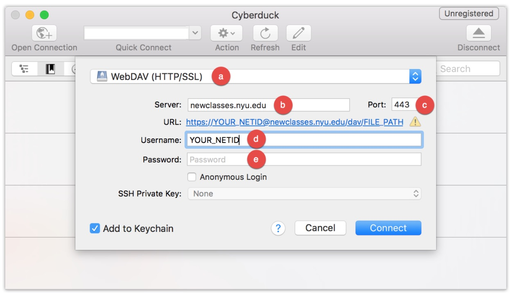

Using WebDAV, you can then easily copy files and folders between NYU Classes and your computer. The following instructions detail the process for downloading Cyberduck and using it to connect to this site's Resources.
To connect to a site's Resources tool, you must first download the Cyberduck FTP client. To do so:
Download options for Mac (.zip) and Windows (.exe) will display on the left side of the screen. Select the appropriate version for your operating system, and the application will download to your computer.
Note: While "Download on the Mac App Store" and "Get it on Windows 10" links are available, these versions of Cyberduck are not free. To download a free version, select the Windows/Mac download buttons.
Double-click the downloaded file.
Cyberduck will now be successfully installed on your computer.
Once you have installed Cyberduck, you can use it to connect to your site's Resources.
Note: If you have a previously installed version, you must update to the latest version (v. 5.3.3 or higher).
You will be presented with a form similar to the following (screenshot taken from Cyberduck v. 5.3.3 on MacOS):
Complete the form as follows:
Within the "Server" field, paste the following path (unique to this course site):
Once pasted, only "" will display in the “Server” field. The full path will display as a blue URL below.
You will now see a window on your screen showing the Resources in your site. Simply drag-and-drop files/folders between your computer and this window to transfer content to/from the Resources tool.